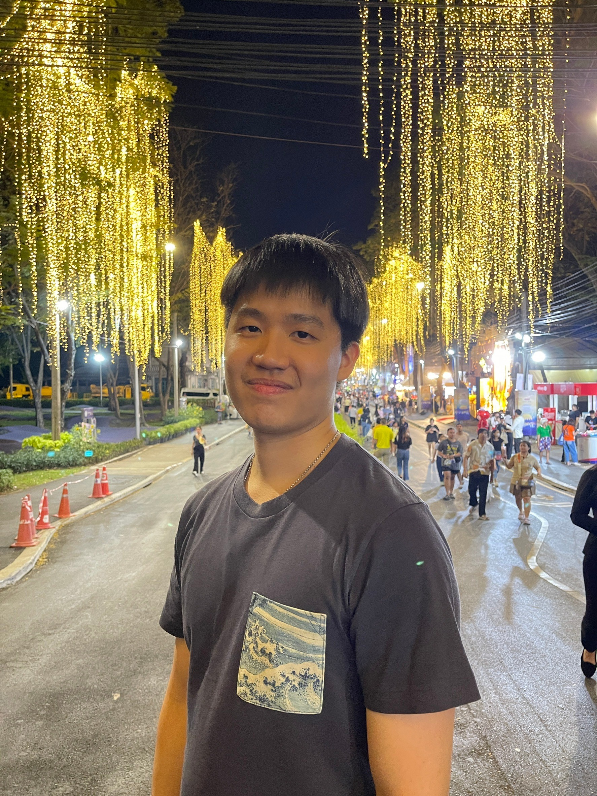

MS student at USC SAIL Lab, with a visiting collaboration at CMU, working on speech enhancement, audio generation, and robust audio processing.

I am a Master's student in Computer Science at the University of Southern California (USC), working in the SAIL Lab under Prof. Shrikanth S. Narayanan. I am concurrently a Visiting Collaborator at Carnegie Mellon University with Prof. Shinji Watanabe, where I focus on single-stream token codec models for speech generation and recognition.
My research interests lie in speech enhancement, voice anti-spoofing, binaural spatial audio, and accented speech synthesis. I am particularly interested in problems at the intersection of generative modeling and signal processing.
I completed my B.Eng. in Computer Engineering at Chulalongkorn University with First-Class Honors (GPA 3.92), where I worked with Asst. Prof. Ekapol Chuangsuwanich on speech enhancement and real-time voice assistant systems.
Started as a Visiting Collaborator at CMU with Prof. Shinji Watanabe, working on speech codec models.
Two papers accepted at ICASSP 2026 — binaural speech enhancement and accented speech synthesis.
Paper accepted at Interspeech 2025 — voice anti-spoofing via speech enhancement artifact amplification.
Started M.S. at USC SAIL Lab under Prof. Shrikanth S. Narayanan.
Presented Thunder at Interspeech 2024 in Kos, Greece. Received a travel grant.
Conference papers and preprints — bold = Thanapat Trachu
Research and industry positions
Academic training in computer science and engineering
Technologies and frameworks I work with
Competition wins, grants, and academic distinctions
Open to collaborations, research discussions, and opportunities in speech AI and audio ML.